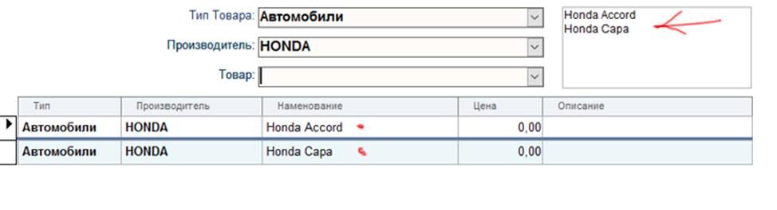

Строка по данным записей подчинённой формы
Статья написана по мотивам вопросов на одном из форумов.
Бывает (ну бывает), нужно получить совокупную строку из данных подчинённой формы
Для выввода значения в поле главной формы:
В главной форме, в нужное поле, ставим свойство Источник Данных = SFSubForm([Подчинённая_Форма];"Название_Поля_Откуда")
Где : "[Подчинённая_Форма]" ссылка на обьект "подчинённая форма", "Название_Поля_Откуда" - понятно, а делитель пропущен (будет = ; ).
Предупреждаю! - на большом кол-ве записей может притормаживать.
Public Function SFSubForm(ObjectSubForm As SubForm, strFieldName$, Optional sCut$ = ";") As String
'es : 07.08.2016
'Возвращает строку по данным подчинённой формы (сборка значений поля по всем записям)
'--------------------------------------------------------------------------
'Аргументы:
' ObjectSubForm - Ссылка обьект подчинённая форма
' strFieldName - название поля в источнике данных формы - Откуда?!
' sCut - Опционально: Разделитель значений (по умолчанию = ";")
'--------------------------------------------------------------------------
Dim rst As DAO.Recordset
On Error GoTo SFSubForm_Err
Set rst = ObjectSubForm.Form.RecordsetClone
With rst
Do Until .EOF = True 'Цикл до конца
SFSubForm = SFSubForm & .Fields(strFieldName) & sCut
.MoveNext
Loop
End With
'Debug.Print SFSubForm '(для тестирования)
SFSubForm_End:
On Error Resume Next
rst.Close
Set rst = Nothing
Exit Function
SFSubForm_Err:
SFSubForm = "ERR: " & Err.Number
'MsgBox "Процедура SFSubForm привела к ошибке:" & vbCrLf & _
Err.Description & vbCrLf & " Err#" & Err.Number, vbCritical
Resume SFSubForm_End
End Function
На снимке, источник данных поля:
=SFSubForm([objSubForm];"GoodName";Chr(13) & Chr(10))
... последний аргумент = ПереводСтроки (вместо точки с запяотой по умолчанию)
